No es una sola fórmula. Primero clasificamos cómo está el teléfono. Luego calculamos la inclinación de la moto.
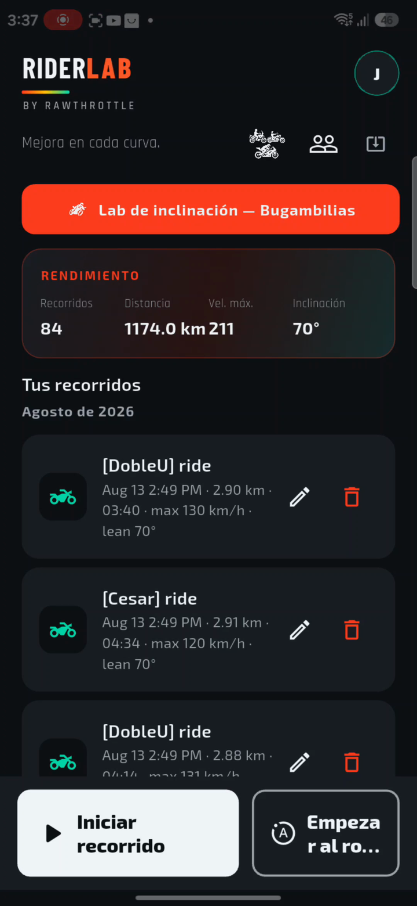
En el bolsillo medimos cadera. En el tanque medimos chasis. Si congelamos el cero mal, cada curva del día sale a 70° — y eso no es un récord, es un sensor perdido.
| Canal | Sigue la inclinación de la moto cuando |
|---|---|
| Roll / roll fusionado | Teléfono vertical (tanque o bolsillo) |
| Pitch + vector | Teléfono horizontal (plano en el tanque) |
| Vector lean | Siempre — ángulo 3D desde el cero congelado |
| Lean viejo de la app | Se rompe si la punta no es roll de retrato |
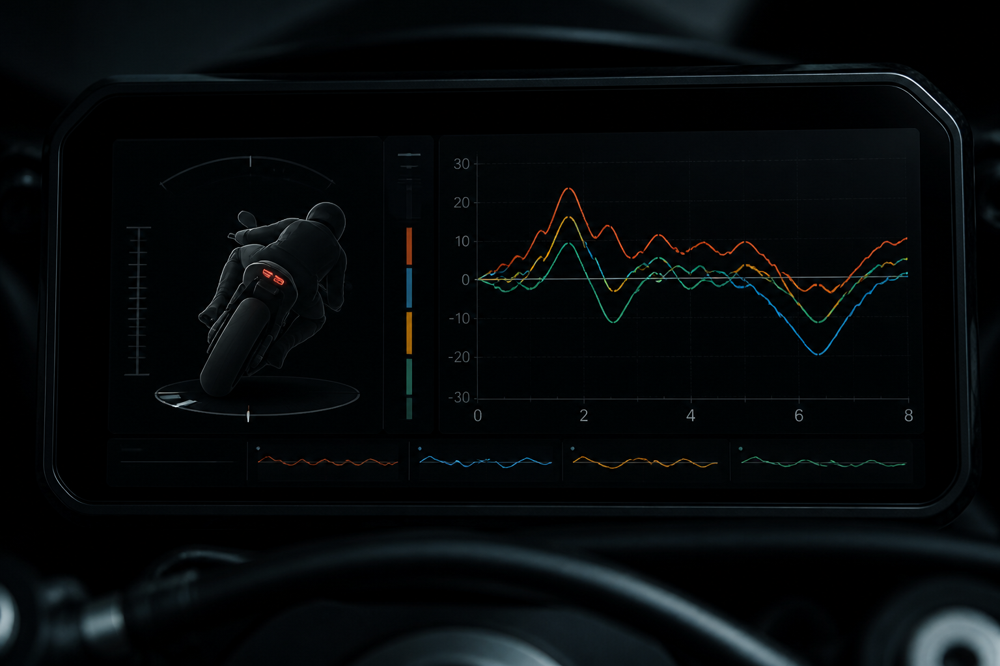
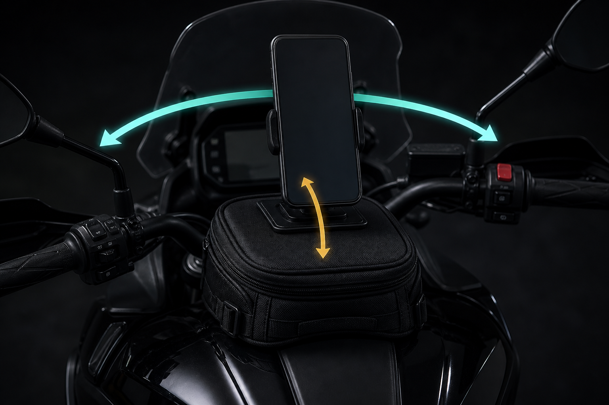
La gravedad se sienta en +Y (hacia arriba de la pantalla). La inclinación de la moto es izquierda / derecha en ese marco = roll. El giroscopio la mantiene viva entre vibración.
El pitch es cabeceo, pendiente, frenada — no es la curva.
La gravedad se sienta en +Z (pantalla hacia arriba). La misma inclinación de la moto ahora vive en otro eje. El roll de retrato se queda mudo. Pitch y vector sí siguen la curva.
Por eso tres teléfonos en una pared no coincidían: unos leían roll, uno leía pitch.
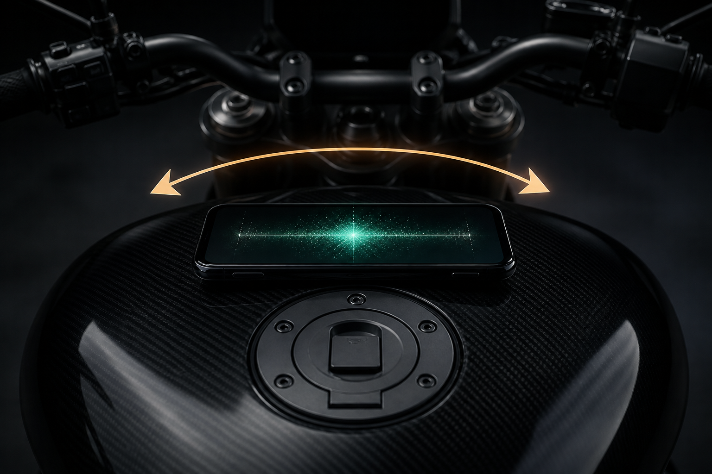
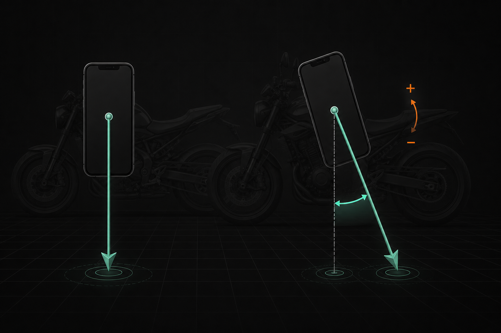
La app lee qué eje del teléfono apunta hacia arriba. Eso es la pose. No hace falta una curva. Los chips de montaje son etiquetas de entrenamiento — los sensores eligen el canal.
| Eje arriba | Pose | Canal de inclinación |
|---|---|---|
| ±Y | Vertical (tanque / bolsillo) | Roll fusionado |
| ±X | Horizontal de lado | Pitch fusionado |
| ±Z | Plano (pantalla arriba / abajo) | Pitch / vector |
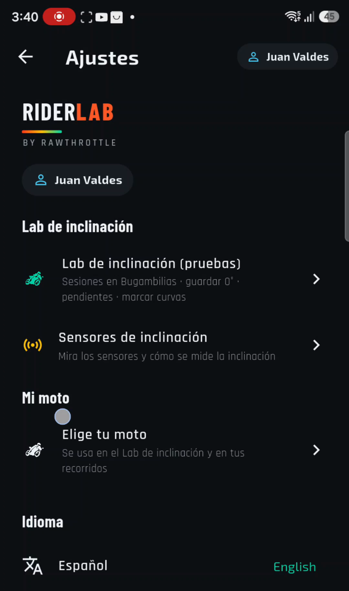
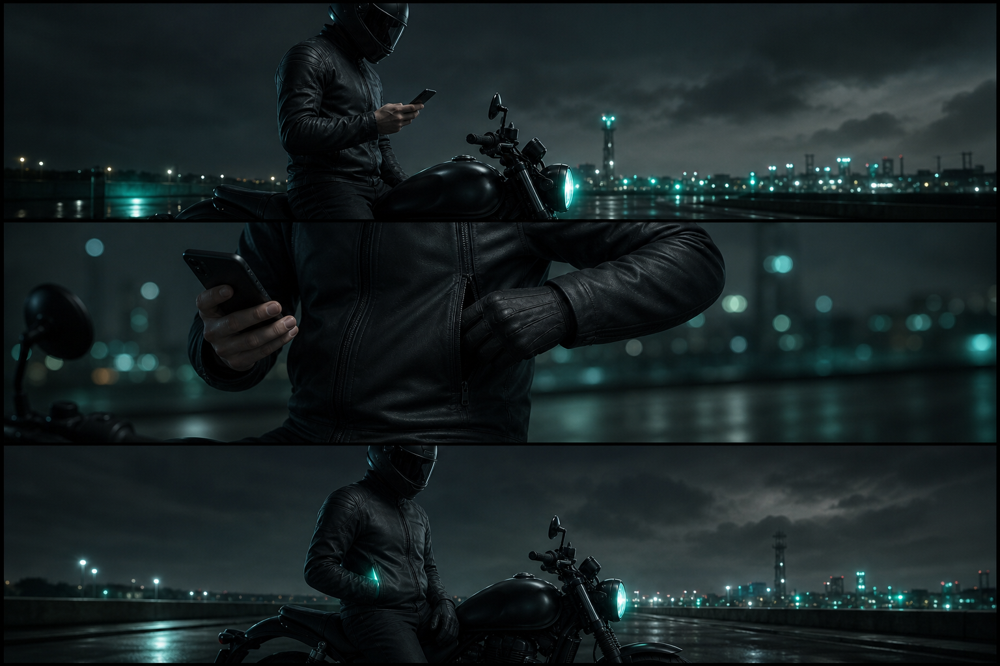
Nunca sostener 4 s frente a la cara — eso congela la mano, no el bolsillo.
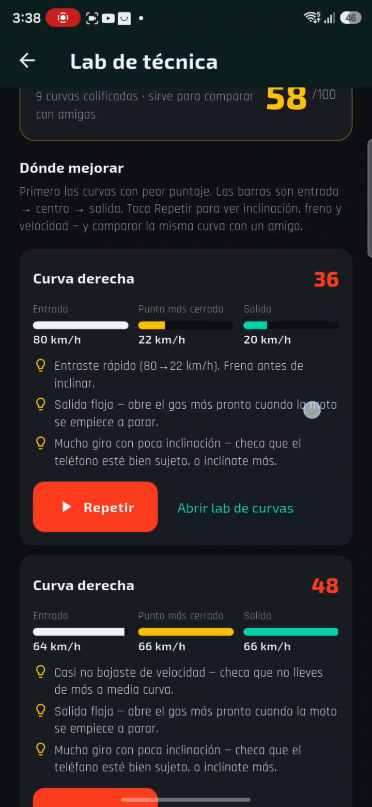
El vector es el oráculo (siempre es el tilt 3D desde g0). Cada ~1 s preguntamos: ¿qué Euler sigue al vector — y al giro del GPS?
El giroscopio sostiene el Euler ganador entre baches. El GPS no es inclinación — solo vota “vamos en curva”.
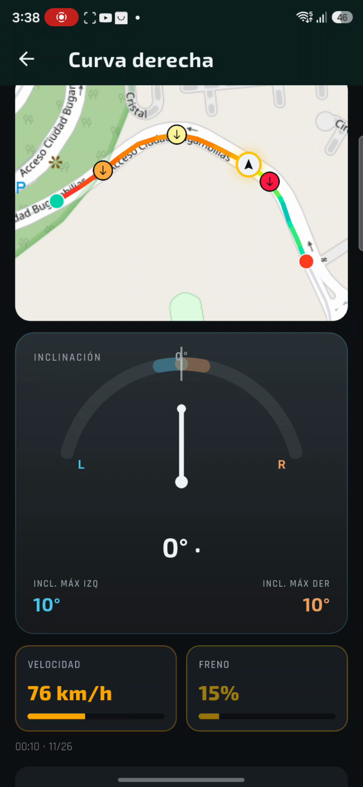
El IMU lab enseña al motor. Ride Lab ya muestra inclinación firmada en el mapa y en cada curva — entrada, punto más cerrado, salida.
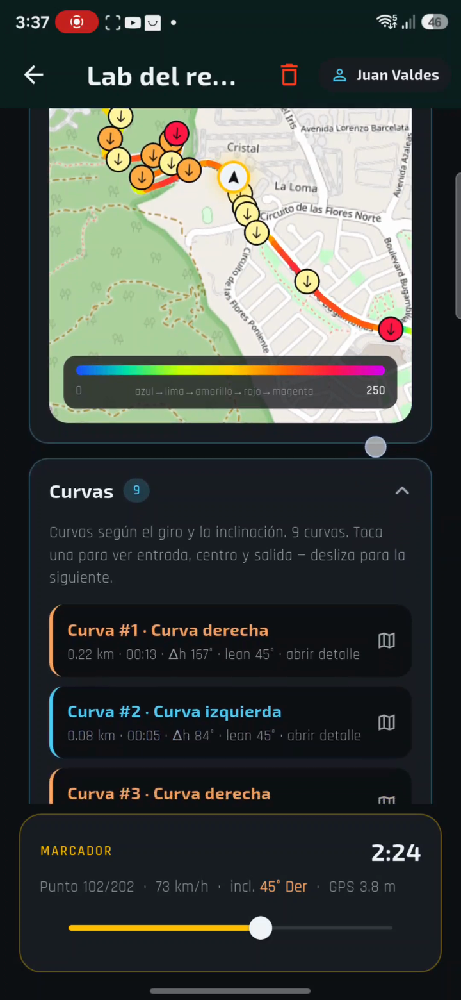
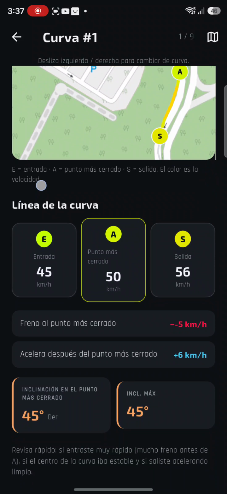
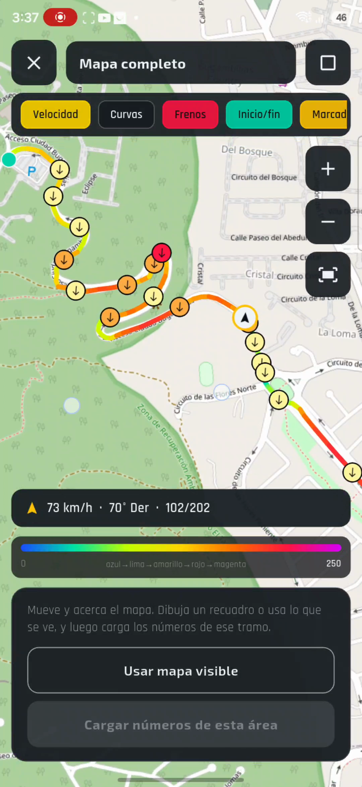
Compara magnitudes de vector en una inclinación lenta. Los nombres de canal pueden diferir — eso es correcto. El número de salida sigue siendo inclinación de la moto, con signo.
Bugambilias es el circuito piloto. Misma carretera, ida y vuelta, bolsillo A/B — para entrenar el sesgo, no esconderlo.
Congelar g0 · clasificar pose · tracker de cuatro canales · inclinación firmada en cada punto GPS.
El IMU lab se vuelve el maestro. El garaje conserva el mismo campo leanDegrees — el número, ahora sí, es honesto.